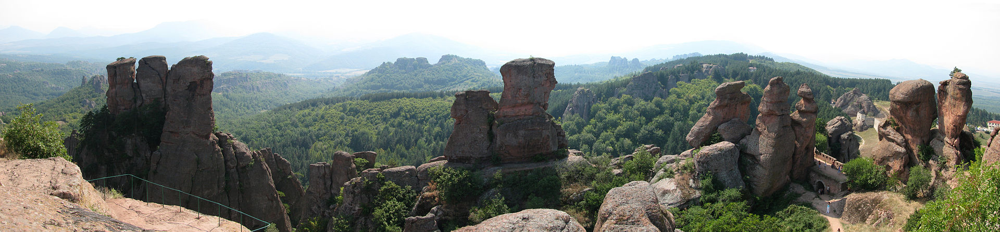
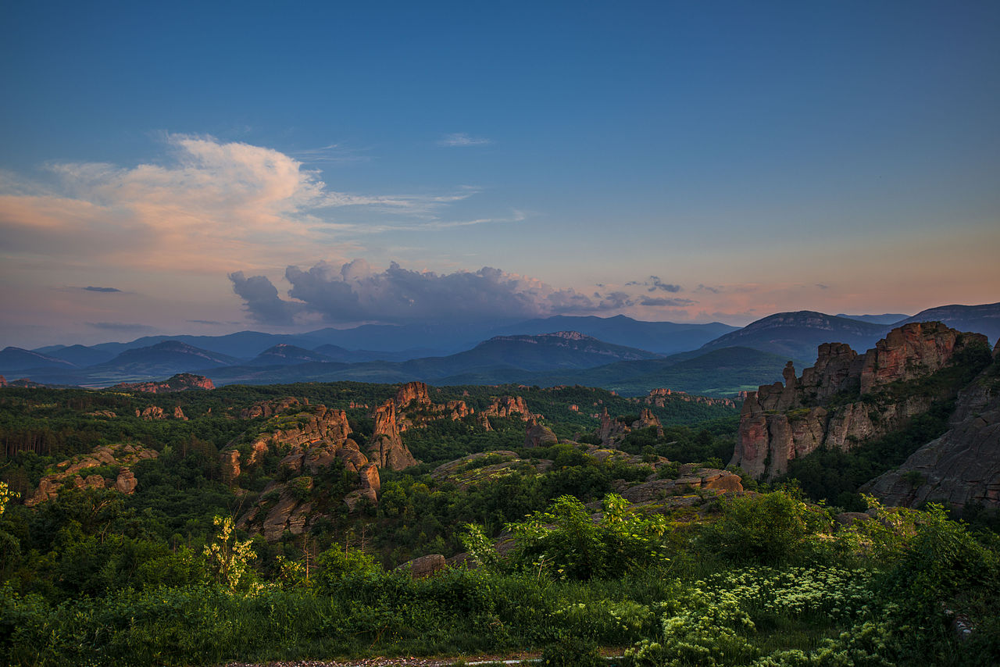
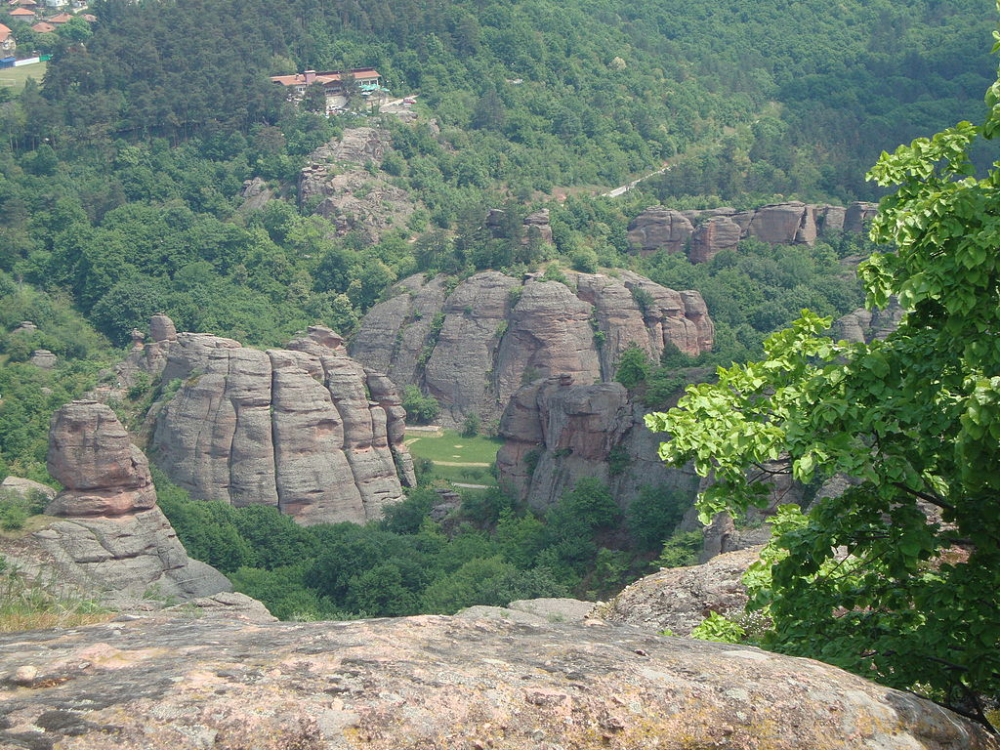

Белоградчишките скали са скални фигури, високи до 200 m, разположени в Западния Предбалкан, близо до град Белоградчик.
Скалите варират в цветове от чисто червено до жълто. Много от скалите имат фантастични форми и са включени в интересни легенди. Те често са наричани на хора или предмети, на които приличат или напомнят. Белоградчишките скали са вписани като природни забележителности от българското правителство и са главната туристическа атракция в региона.
Образуват ивица с дължина 30 km и ширина до 3 km. Включени са в списъка на Стоте национални туристически обекта. Белоградчишките скали се състоят от три скални групи. Обявени са за природна забележителност през 1949 г.
Белоградчишките скали покриват площ от 50 km² в западната част на Стара планина. Те се простират от село Рабиша на запад до село Белотинци на изток.
Много фантастични скални фигури и малки долини със стръмни вертикални склонове са се оформяли в продължение на стотици милиони години в резултат на ерозия, денудация, растеж на мъхове и лишеи и други природни фактори.
Образуването на Белоградчишките скали започва през пермския период преди около 230 милиона години, в края на тектонския цикъл, създал Стара планина и повдигнал региона около Белоградчик.
По-късно през периода триас регионът става дъно на плитко море. По същото време разрушаването на палеозойски скални формации оставило огромни количества чакъл, пясък и глина, които били складирани от реките в басейна на морето. Утайката се натрупвала и постепенно образувала плътни дебели образувания, които с течение на времето, повлияни от силата на водата, ставали добре закръглени и компактни.